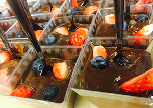
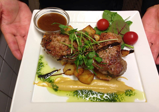

Catering
Vi anpassar oss alltid efter kundens behov och önskemål samt erbjuder vi gratis leverans.
Kontakta oss med information om ditt event (tema, antal gäster osv.) så återkommer vi med ett förslag.
Service
Ni erbjuds take away, får snabb service och vi är lättillgängliga varje dag.
Personal
Vi erbjuder personlig service, engagerad och mycket erfaren personal.
leverans
Vi är alerta, levererar i tid och ofta över förväntningarna.

